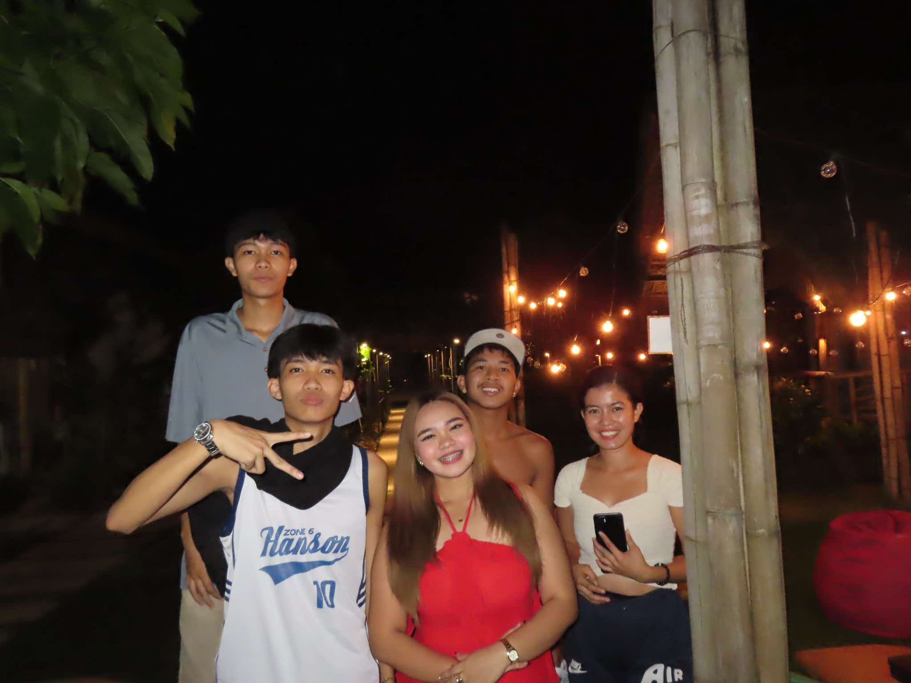

MY FRIENDS


This photos captures more than just a photo shots it shows friendship, support, and shared moments. Being here with my friends and my niece's friends reminds me how life connects us in unexpected and meaningful ways. Different paths, same laughter, same memories. Grateful for moments like this!
HOBBIES


Cooking:I really love cooking, and I've loved it since I was a child. I learned how to cook from my father, who I really admired in the kitchen. Whenever I cook, I remember the times when he was still alive and we cooked together. Thats how I developed my love for cooking.
playing guitar and singing:.
I enjoy playing guitar when im bored. when im playing guitar it feels relaxing and peace,since i was a grade 10 i played guitar then now i am a song writer too.Watching Anime:I love watching anime every night before going to sleep. Watching anime is my peace..